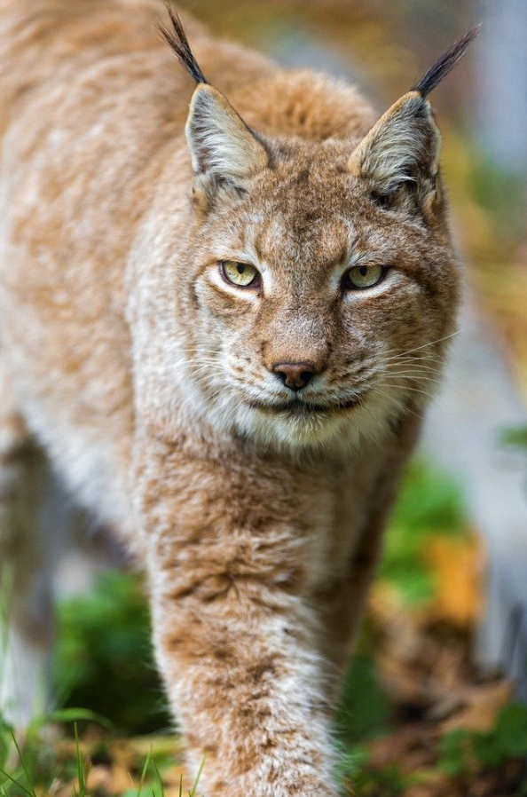
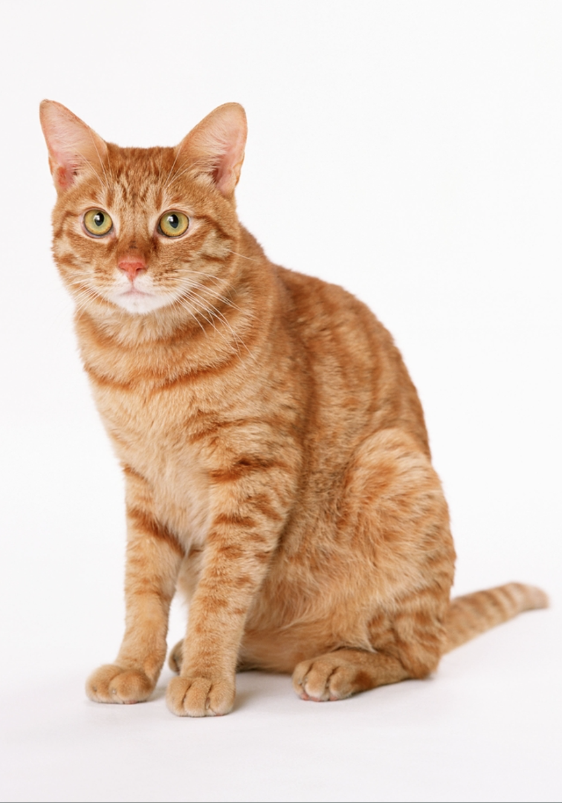
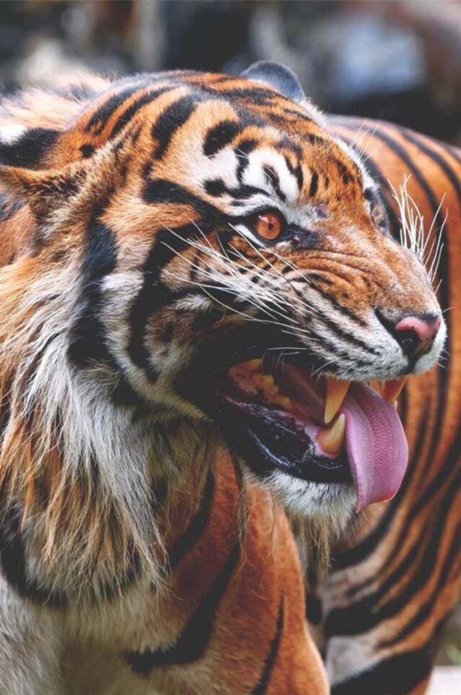
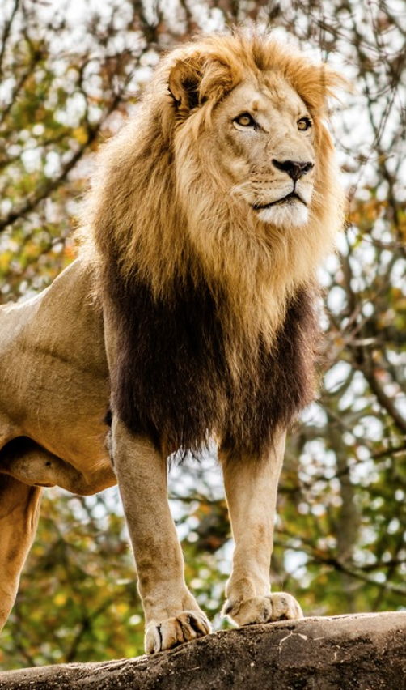

Lynx
Lynx have a short tail, characteristic tufts of black hair on the tips of their ears, large, padded paws for walking on snow and long whiskers on the face. Under their neck, they have a ruff which has black bars resembling a bow tie although this is often not visible.